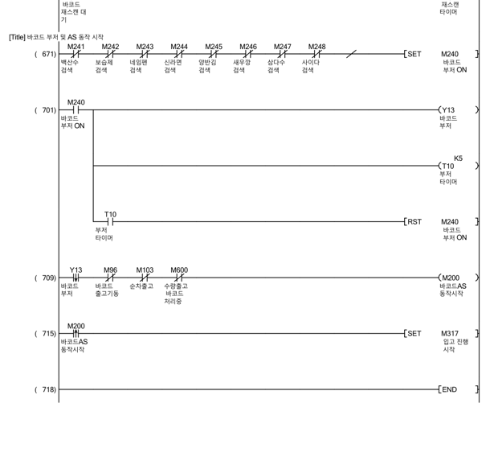
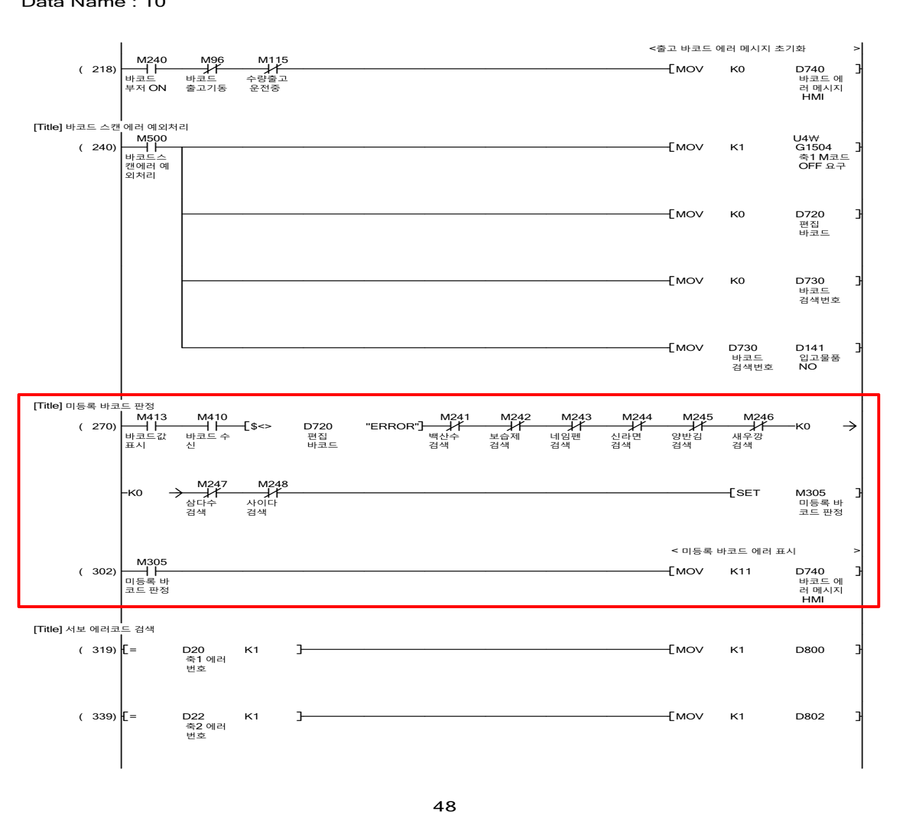
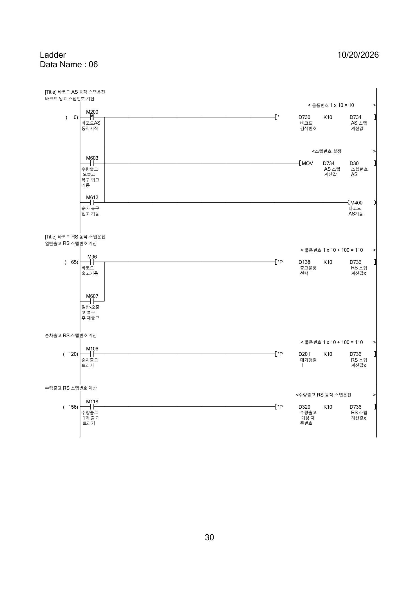

PROJECT
8-Bay 자동창고
바코드로 물품을 식별하고 지정 위치에 보관·출고하는 자동 입출고 시스템.
MELSEC Q시리즈 PLC와 XY 2축 서보, 공압, 바코드, HMI를 연계한 8-Bay 자동창고 프로젝트입니다. 팀 프로젝트의 시스템 구성과 개인이 담당한 트러블슈팅을 구분해 소개합니다.
개선 사례 살펴보기 ↓웹 HMI 체험 ↗
바코드로 물품을 식별하고 지정 위치에 보관·출고하는 자동 입출고 시스템.
5인 팀 프로젝트. 김지현은 조장으로 참여.
기존 레더 분석, 시퀀스 수정, HMI 복구 연계, 예외 상황 시험 및 검증.
MELSEC Q03UDVCPU · LS XP-Builder. 운전 조건, 디바이스 상태, 알람 및 복구 조작 연계.
위치결정 데이터에 따른 Bay 이동, 원점복귀, 조그·스텝운전 및 M코드 연계.
실린더·위치센서·압력센서와 바코드 인식을 입출고 시퀀스에 연동.
전원·센서 확인, X/Y축 원점복귀
제품 선택 → 바코드 확인 → Bay 적재 → 재고 +1
제품 선택 → 인출 → 바코드 확인 → 배출·재고 -1
요청 수량 설정 → 반복 인출·검증 → 완료
원본 프로그램의 문제 재현 → PLC 디바이스 분석 → 레더 수정 → 동작 검증 순서로 정리했습니다. 세부 접점과 테스트 범위는 제공된 프로젝트 발표 자료 기준입니다.
원본 프로그램에서 실제 재현한 현상을 기준으로, 입고 기동 조건을 어떻게 수정했는지 단계별로 정리했습니다. 아래는 레더 원본 이미지가 아닌 제어 흐름을 설명하기 위한 도식입니다.
바코드 없이 스캔했을 때 오류 판정 M249가 ON 되었지만, 입고 요청 M240과 입고 시퀀스 M200으로 이어졌습니다. 이전 제품번호 D730이 남아 이전 제품의 위치로 이동하는 문제가 발생했습니다.
원본 M240 SET 조건에 오류 판정 M249가 포함되어 있어, 정상 제품 판정과 오류 판정이 입고 요청 경로에서 구분되지 않았습니다.
M240 기동 조건에서 M249를 제외하고, 등록 바코드 일치 판정 M241~M248만 입고를 요청하도록 수정했습니다. 잔존 제품번호 데이터 초기화도 보완했습니다.
스캔 요청 발생
오류 판정이 입고 요청에 포함
이전 제품번호를 기반으로 위치 이동
등록 제품 일치 여부 확인
M249 오류 판정은 입고 요청 조건에서 제외
기존 제품번호 잔존 방지 초기화 보완
빨간 박스: 기존 434번 네트워크 M249 접점 및 개선 후 제거 위치. 426번 네트워크의 M249 오류 판정과는 구분됩니다.
추가 회로: 스캔 오류 분기와 M500 초기화 · 기존 사례 01의 보충 레더를 동일한 카드 스타일로 배치
자료 근거: 「ASRS_RETRY_포트폴리오_개인화」 트러블슈팅 사례 01 (20~21/39). 실제 개선 전·후 레더 캡처를 바로 위에 추가했습니다.
미등록 바코드의 입고 차단은 기존에도 동작했으며, 작업자에게 오류 원인을 명확히 안내하도록 개선한 사례입니다.
미등록 바코드는 입고되지 않았지만 작업자에게 미등록 상태가 명확하게 표시되지 않았습니다.
기존 입고 제한 기능과 별개로 미등록 판정 및 HMI 메시지 표시 경로가 필요했습니다.
등록 제품 검색 M241~M248과 스캔 오류를 구분하고, 미등록 시 M305를 SET하여 HMI에 K11 오류를 표시했습니다.
등록 제품 검색 결과 없음
기존에도 미등록 제품은 입고되지 않음
작업자가 미등록 원인을 바로 확인하기 어려움
D720 ERROR 상태 구분
M241~M248 등록 제품 검색
HMI에 미등록 바코드 오류 표시
BEFORE / 기존 레더 바코드 부저 · AS 동작부저 요청 M240  개선 전 실제 PLC 레더 · 클릭하여 확대 | AFTER / ADDED LOGIC [추가] 미등록 바코드 판정 · HMI 안내스캔 오류 제외 D720 <> "ERROR"  개선 후 실제 PLC 레더 · 빨간 박스 강조 · 클릭하여 확대 |
출고 바코드 인식 실패 시 전체 PLC 리셋 없이 재스캔할 수 있도록 개선한 사례입니다.
출고 바코드 인식에 실패하면 재스캔 경로가 없어 PLC 리셋이 필요했습니다.
바코드 스캔 실패 상태를 유지하고 재스캔을 요청하는 별도 시퀀스가 필요했습니다.
M306 오류 대기 SET, D740=K12 HMI 표시, T41 이후 M97 재스캔 요청. M99 정상 출고 성공 시 오류 상태와 메시지를 초기화했습니다.
바코드 스캔 시도
정상 출고 조건 미성립
PLC 리셋 필요
D740 K12 HMI 표시
재스캔 요청
M306 및 오류 메시지 초기화
원본 PLC 레더 PDF에서 추출 · M99 초기화는 38~39페이지 연결 · 이미지 클릭 시 원본 크기로 보기
일반출고 제품 불일치 시 복구 입고와 최초 요청 제품 재출고 경로를 추가한 사례입니다.
요청 제품과 실제 스캔 제품이 일치하지 않아 정상 출고를 완료할 수 없었습니다.
기존 정상 출고 판정 외에 오출고 제품 복구 입고 및 원래 제품 재출고 경로가 필요했습니다.
M111 불일치 판정 및 D740=K13 오류 표시, M604 승인 후 M603 복구 입고, M93 완료와 M606/T50 대기를 거쳐 M607 재출고 단계로 연결했습니다.
요청 제품과 스캔 제품 확인
정상 출고 판정 불성립
오출고 제품 복구·재출고 필요
불일치 판정 및 HMI 오류
승인 후 복구 입고 완료
대기 후 최초 요청 제품 재출고

M603 복구 입고 스텝번호 설정 · M607 재출고 스텝번호 계산(재출고 단계에서도 사용) · 클릭하여 확대
원본 PLC 레더 PDF 추출 이미지 · 복구 공용 회로에 수량출고 접점이 함께 표시될 수 있으나 본 사례는 일반출고만 설명
복구 완료 후 재출고 단계가 이어지도록 PLC 스캔 타이밍을 보완한 사례입니다.
오출고 제품 복구 입고가 끝난 후 원래 요청 제품의 재출고가 이어지지 않았습니다.
복구 완료 신호와 다음 출고 상태 비트의 전환 시점이 PLC 스캔 순서의 영향을 받았습니다.
M93 복구 완료 후 M606 재출고 대기 상태를 설정하고 T50 지연을 거쳐 M607/M608 재출고 단계로 전환했습니다.
복구 입고 완료 신호
PLC 스캔 순서 영향
다음 출고 단계로 연결되지 않음
재출고 대기 상태 SET
재출고 전환 지연
재출고 단계 전환
기존에 없던 공압 이상 예외처리 기능을 신규 구현했습니다. 대기 중에는 이상 해제 경로를, 작업 중에는 별도 재개 버튼을 거치는 복구 경로를 적용했습니다.
대기 중 공압 이상과 작업 중 실린더 동작 이상을 구분해 처리해야 했으며, 작업 중 복구 직후 의도치 않게 동작이 재개되는 문제도 있었습니다.
공압 이상 해제와 중단된 작업의 재개를 같은 조건으로 처리하지 않고, 현재 작업 상태에 따라 복구 경로를 분리할 필요가 있었습니다.
X6 압력센서 및 T30~T34 감시로 이상을 판정하고 M310을 통해 정지 조건을 형성했습니다. 대기 중에는 이상 해제 경로를, 작업 중에는 M350 승인과 작업별 재개 요청(M351~M353·M614)을 거쳐 M354·M355로 정지 해제를 요청하도록 구현했습니다.
실린더 동작 조건 잔존
기존 출력 조건 재성립 가능
작업자 승인 없는 재동작 위험
압력·실린더 감시 후 이상 판정
공압 복귀만으로 운전 재개 방지
작업 중에는 별도 재개 요청 후 정지 해제, 복구 플래그 초기화
실제 PLC 레더 6장 · 4페이지에는 서보 정지와 해제 회로가 함께 포함됨 · 이미지 클릭 시 원본 확대
포토인터럽터 센서 역극성 결선의 원인을 추적하고 배선을 수정한 사례입니다.
센서 배선 연장 후 최종 단자대에서 +24V와 0V가 반대로 연결되어 센서가 고장났습니다.
배선 연장 구간의 최종 결선에서 전원 극성이 뒤바뀐 것이 원인이었습니다.
배선 경로를 추적해 극성을 수정하고 센서를 교체한 뒤 선번과 전원을 확인했습니다.
최종 단자대 결선 작업
전원 극성 반대 연결
정상 검출 불가
최종 단자대 극성 확인
전원 결선 정상화
설비 오류 해제 확인
발표자료 기반 설명용 흐름도 · 실제 PLC 레더 이미지 아님
근거: 발표자료 38쪽 · 실제 레더/사진의 원본과 수정 위치는 최종 이미지 검토 후 연결
실제 XP-Builder 화면을 참고한 웹 시연입니다. PLC와 연결되지 않은 학습·소개용 시뮬레이터이며 실제 설비 제어 기능은 없습니다.
HMI 체험하기 ↗메인으로 돌아가기 ←